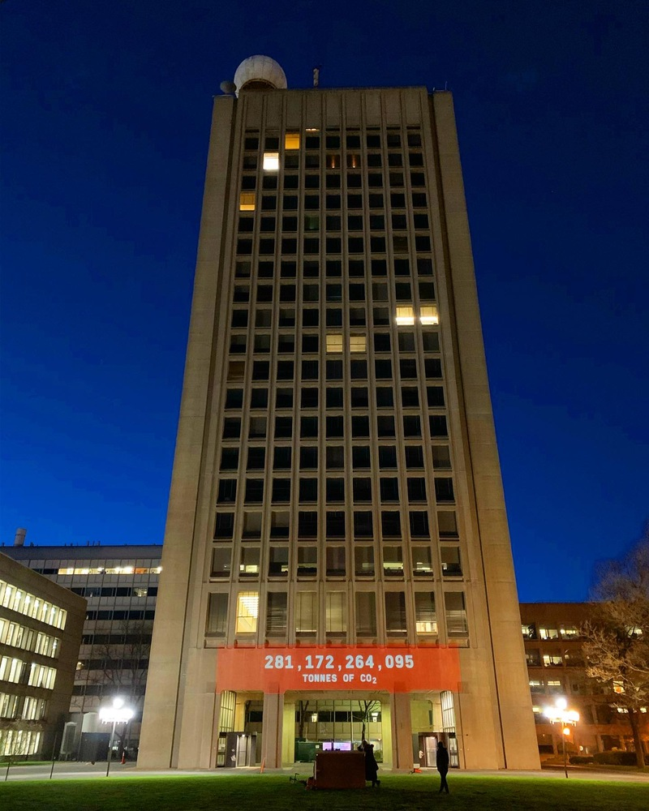

The most current project page is here: https://web.mit.edu/climateclock/
If you want to read more about our project and our progress check out the links below!
Publicity
Boston Globe April 24th 2021: Article Here
MIT D-Lab April 22nd 2021: Article Here
Climate Portal December 16th, 2020: Article Here
MIT Open: Article Here
Boston.com: Article Here